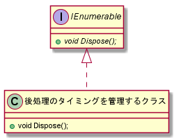

Title list
Title list RSS
RSS Admin
AdminC# インターフェース - IDisposable

今回は C# のインターフェースの
IDisposable に関する説明です。
このインターフェースはファイルといった後処理のタイミング管理が必要なクラスで実装します。
あるファイルに書き込みを行い、次にそれに読み取る処理を考えます。
ただし、解放の後処理をガベージコレクション(GC)任せにしていると、 ファイルが閉じられる前にアクセスして、不測の結果を招きかねません。
そこで、今度はちゃんとファイルのクローズも呼び出してみます。
C# では IO ストリーム系のクラスはファイルのクローズ Close() とリソースの解放 Dispose() が同じ処理です。 ここではクローズの処理として Dispose() を使用します。
途中の処理で例外が発生して、抜けることになっても Dispose() は呼び出さないといけません。
これを try, catch, finally で書くと次のようになります。
しかし、修正等でいざアクセスすることになったとき、 GC まかせなので、 環境によって出たり出なかったりする たちの悪いバグ になる可能性があります。
IDisposable の継承は後処理のタイミング管理が必要というサインです。 IDisposable を継承したクラスでは必ず using を使うというように心がけた方がいいでしょう。
このような場合には、自作のクラスで IDisposable を継承し、 それを利用する際に using を使うということになります。
すなわち、 IDisposable を継承したクラスをメンバーで持つ場合に自身も IDisposable を継承します。
その他にも C++ 由来のライブラリーなどで、 メモリー解放用のメソッドを呼び出す必要のあるオブジェクトもアンマネージリソースです。
私としては "アンマネージリソースを持つクラスは全部 IDisposable を実装する" ということにはならないと思います。
アンマネージリソースでも ファイナライザー(デストラクター)で解放用メソッドを呼び出せば、 GC が一緒に解放してくれます。
後処理のタイミングを制御する必要があるクラスでのみ IDisposable を継承するとした方がいいと思います。
実際には Dispose() でアンマネージリソースだけ解放して、 残りは GC で解放といったこともできます。
しかし、 Dispose() ではマネージリソース、アンマネージリソースともに解放する というのが勧められているようです。
最初にサンプルの概略を説明した後、 Dispose() の実装について解説します。
(CheckDisposed() については後述します)
これにあわせて実装していきます。
このサンプルではフッターの書き込みという後処理は必ずしなければなりません。
1. の場合は Dispose() ですべてのリソースを解放します。
解放した後は GC.SuppressFinalize() で GC による解放はしないようにしています。
2. の場合にはファイナライザーが呼び出されてリソースを解放します。
ここではアンマネージリソースのみ解放し、 マネージリソースはそのまま GC に解放させます。
このリソースの解放は Dispose(bool) で行います。 アンマネージリソースは常に解放し、 マネージリソースは bool 値で切り替えます。
処理を行うメソッドが呼び出された場合には ObjectDisposedException の例外を投げるようにしておきます。
サンプルではアンマネージリソースとして StreamWriter を使いました。 もしフッターの出力という後処理がなければ、 全部 GC にまかせても、ファイルのクローズまで GC で行なってくれます。
アンマネージリソースの後処理が必要ない場合にはファイナライザーの定義は不要です。
そのためテンプレートは少し簡単になります。
このインターフェースはファイルといった後処理のタイミング管理が必要なクラスで実装します。
using
IDisposable を継承すると using (名前空間のものとは別) が使えるようになります。 まず、この using について説明します。あるファイルに書き込みを行い、次にそれに読み取る処理を考えます。
{
StreamWriter sw = new StreamWriter("TestFile.txt");
// ファイルへの書き込み
sw.WriteLine("Hello World!");
}
// ファイルの読込
StreamReader sr = new StreamReader("TestFile.txt");
ファイルへの書き込みを行うオブジェクト sw はブロックを抜けると、
必要がなくなり解放されます。この時ファイルのクローズが行われます。ただし、解放の後処理をガベージコレクション(GC)任せにしていると、 ファイルが閉じられる前にアクセスして、不測の結果を招きかねません。
そこで、今度はちゃんとファイルのクローズも呼び出してみます。
C# では IO ストリーム系のクラスはファイルのクローズ Close() とリソースの解放 Dispose() が同じ処理です。 ここではクローズの処理として Dispose() を使用します。
{
StreamWriter sw = new StreamWriter("TestFile.txt");
// ファイルへの書き込み
sw.WriteLine("Hello World!");
sw.Dispose(); // sw.Close() と同じ
}
これで OK としたいところですが、
書き込みの処理が複雑になってくると例外の発生も考慮する必要がでてきます。途中の処理で例外が発生して、抜けることになっても Dispose() は呼び出さないといけません。
これを try, catch, finally で書くと次のようになります。
StreamWriter sw = new StreamWriter("TestFile.txt"); try { // ファイルへの書き込み sw.WriteLine("Hello World!"); } catch( Exception e ) { // 例外処理 } finally { // 常に行う終了処理 sw.Dispose(); }しかし、これでは記述が若干面倒です。 これを簡易的に記述するのが using です。
using (IDisposableを継承したオブジェクト) { // 処理 } // ブロックを抜けるときにオブジェクトの Dispose() メソッドを呼び出す。
using (StreamWriter sw = new StreamWriter("TestFile.txt")); { // ファイルへの書き込み sw.WriteLine("Hello World!"); }実際には何度もアクセスするということがなければ、 ファイルのクローズも GC まかせでも問題はないかもしれません。
しかし、修正等でいざアクセスすることになったとき、 GC まかせなので、 環境によって出たり出なかったりする たちの悪いバグ になる可能性があります。
IDisposable の継承は後処理のタイミング管理が必要というサインです。 IDisposable を継承したクラスでは必ず using を使うというように心がけた方がいいでしょう。
用途
特殊なファイルの IO で標準のストリームクラスをラップするようなクラスを作ったとします。 それだとストリームクラスは使いますが using は使えません。このような場合には、自作のクラスで IDisposable を継承し、 それを利用する際に using を使うということになります。
すなわち、 IDisposable を継承したクラスをメンバーで持つ場合に自身も IDisposable を継承します。
マネージリソースとアンマネージリソース
C# では通常のオブジェクトは GC で管理されるマネージリソースです。 ストリームクラスのようにファイルを扱うようなオブジェクトはアンマネージリソースと呼ばれます。その他にも C++ 由来のライブラリーなどで、 メモリー解放用のメソッドを呼び出す必要のあるオブジェクトもアンマネージリソースです。
私としては "アンマネージリソースを持つクラスは全部 IDisposable を実装する" ということにはならないと思います。
アンマネージリソースでも ファイナライザー(デストラクター)で解放用メソッドを呼び出せば、 GC が一緒に解放してくれます。
後処理のタイミングを制御する必要があるクラスでのみ IDisposable を継承するとした方がいいと思います。
// アンマネージリソースを持つクラス class MyResource { // アンマネージリソース private IntPtr _handle; // ファイナライザー(デストラクター) ~MyResource() { // アンマネージリソースの解放処理 CloseHandle(_handle); handle = IntPtr.Zero; // (マネージリソースは GC に任せるのでここでは解放しません) } }
実装するメソッド
IDisposable を継承するには Dispose() メソッドを実装します。void Dispose()
実際には Dispose() でアンマネージリソースだけ解放して、 残りは GC で解放といったこともできます。
しかし、 Dispose() ではマネージリソース、アンマネージリソースともに解放する というのが勧められているようです。
実装方法
IDisposable の実装をサンプルを使って説明していきたいと思います。最初にサンプルの概略を説明した後、 Dispose() の実装について解説します。
サンプル
サンプルでは StreamWriter をラップして、 html ファイルを作成するようなクラスを作成してみました。 コンパイル:> csc IDisposableSample.csこのクラスでは StreamWriter をメンバーとして持ち、 それを利用して Html のコードの書き込みを行います。
(CheckDisposed() については後述します)
class HtmlFileWriter : IDisposable { // 後処理の管理が必要なメンバー StreamWriter _writer; // 通常のメンバー string _title; // : public void Write(string str) { CheckDisposed(); _writer.Write(HttpUtility.HtmlEncode(str)); } public void WriteRaw(string str) { CheckDisposed(); _writer.Write(str); } public void WriteLine(string str = "") { Write(str); _writer.WriteLine(" <br />"); } // : } // HtmlFileWriterファイルのオープン、クローズ時にはそれぞれ html のヘッダー、フッターを出力します。
// コンストラクター public HtmlFileWriter(string fpath, string title = "Sample") { _title = title; _writer = File.CreateText(fpath); WriteHeader(); } private void WriteHeader() { _writer.WriteLine("<html>"); _writer.WriteLine("<head>"); _writer.WriteLine("<title> " + _title + " </title>"); _writer.WriteLine("</head>"); _writer.WriteLine("<body>"); } private void WriteFooter() { _writer.WriteLine("</body>"); _writer.WriteLine("</html>"); }クラスの使用例と実行時の生成ファイルは次のようになります。
static void Main(string[] args) { string samplefpath = "sample.html"; using (HtmlFileWriter fp = new HtmlFileWriter(samplefpath)) { fp.WriteLine("test"); fp.WriteLine("<test>"); fp.WriteRaw("<strong>Test</strong>"); fp.WriteLine(); } }sample.html :
<html> <head> <title> Sample </title> </head> <body> test <br /> <test> <br /> <strong>Test</strong> <br /> </body> </html>
IDisposable 実装のテンプレート
IDisposable の実装については MSDN でテンプレート的なものが示されています。これにあわせて実装していきます。
class HtmlFileWriter : IDisposable { // Dispose したかどうか private bool _disposed = false; // IDisposable に必須のメソッドの実装 public void Dispose() { Dispose(true); // Dispose() によってリソースの解放を行ったので、 // GC での解放が必要が無いことを GC に通知します。 GC.SuppressFinalize(this); } // ファイナライザー(デストラクター) // // Dispose() が呼び出されていない場合のみ // 実行されます。 ~HtmlFileWriter() { Dispose(false); } // このメソッドの呼び出され方は 2 パターンあります。 // // disposing が true であれば、 Dispose() から呼び出されています。 // // disposing が false であれば、 ファイナライザー(~HtmlFileWriter) // から呼び出されています。 protected virtual void Dispose(bool disposing) { // Dispose がまだ実行されていないときだけ実行 if(!_disposed) { // disposing が true の場合(Dispose() が実行された場合)は // マネージリソースも解放します。 if(disposing) { // マネージリソースの解放 } // アンマネージリソースの解放 _disposed = true; } } }解放処理では 2 つのパターンを考えます。
- Dispose() が明示的に呼ばれる(using を含む)
- GC で解放される
このサンプルではフッターの書き込みという後処理は必ずしなければなりません。
1. の場合は Dispose() ですべてのリソースを解放します。
解放した後は GC.SuppressFinalize() で GC による解放はしないようにしています。
2. の場合にはファイナライザーが呼び出されてリソースを解放します。
ここではアンマネージリソースのみ解放し、 マネージリソースはそのまま GC に解放させます。
このリソースの解放は Dispose(bool) で行います。 アンマネージリソースは常に解放し、 マネージリソースは bool 値で切り替えます。
protected virtual void Dispose(bool disposing) { // Dispose がまだ実行されていないときだけ実行 if(!_disposed) { // disposing が true の場合(Dispose() が実行された場合)は // マネージリソースも解放します。 if(disposing) { // マネージリソースの解放 // マネージリソースは null を指定 _title = null; } // アンマネージリソースの解放 // 閉じる前にフッターを書く WriteFooter(); _writer.Dispose(); _disposed = true; } }
Dispose() 後のアクセス
Dispose() をした後にはリソースはすべて解放されています。 何か処理をすることは禁止です。処理を行うメソッドが呼び出された場合には ObjectDisposedException の例外を投げるようにしておきます。
private void CheckDisposed() { if (_disposed) throw new ObjectDisposedException(GetType().FullName); }
アンマネージリソースの後処理が必要ない場合
アンマネージリソースだからといって必ずしも解放時に後処理が必要とは限りません。サンプルではアンマネージリソースとして StreamWriter を使いました。 もしフッターの出力という後処理がなければ、 全部 GC にまかせても、ファイルのクローズまで GC で行なってくれます。
アンマネージリソースの後処理が必要ない場合にはファイナライザーの定義は不要です。
そのためテンプレートは少し簡単になります。
class HtmlFileWriter : IDisposable { // Dispose したかどうか private bool _disposed = false; // IDisposable に必須のメソッドの実装 public void Dispose() { // Dispose がまだ実行されていないときだけ実行 if(!_disposed) { // マネージリソースの解放 // アンマネージリソースの解放 // Dispose() によってリソースの解放を行ったので、 // GC での解放が必要が無いことを GC に通知します。 GC.SuppressFinalize(this); _disposed = true; } } }
- 関連記事
Delicious0 Tumblr0 Diigo0 Instapaper0 6681
Facebook コメント
コメント

 新着エントリー
新着エントリー